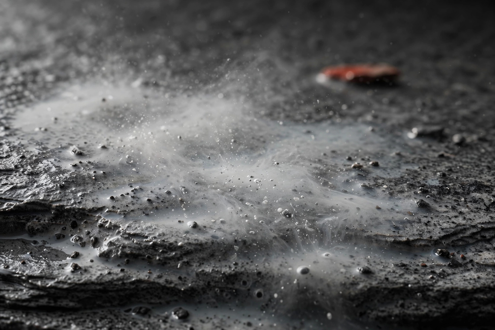

天然砥石の粒度と番手の換算 ― 仕上げ砥は人造の何番相当か

天然砥石の仕上げ砥は、人造砥石の #6000〜#12000以上相当と評されることが多いですが、これはあくまで目安の換算です。天然の粒子は大きさが揃っておらず、研いでいるうちに砥泥の状態も変わるため、一つの番手に単純換算はできません。数字は入口の手がかりに留め、最終的には研ぎ上がりで判断するのが実態に合っています。
換算の目安表
人造砥石に慣れた方が天然砥石を選ぶときの目安として、一般には次のような対応で語られることがあります。繰り返しになりますが、目安としてご覧ください。
| 天然砥石の区分（目安） | 人造の番手換算（目安） | 主な用途 |
|---|---|---|
| 荒砥・中砥寄り | #800〜#2000前後相当 | 刃付けの土台作り、曇った刃の立て直し |
| 中仕上げ砥 | #3000〜#6000前後相当 | 中砥の研ぎ傷を消し、仕上げへの橋渡し |
| 仕上げ砥 | #6000〜#12000以上相当 | 刃先を細かく詰める最終仕上げ、霞仕上げ |
同じ「仕上げ砥」と呼ばれる石でも、実際には #6000相当の感触のものから、それ以上に細かいものまで幅があります。産地や層（地層の位置）によっても傾向が違うため、表は石選びの出発点くらいに捉えるのがちょうどよい距離感です。
なぜ単純換算できないのか ― 粒径分布の話
人造砥石は、砥粒の大きさをふるい分けて均一に揃え、番手として規格化しています。一方、天然砥石の粒子は地層の中で自然にできたもので、大きさにばらつきがあります。細かい粒子の中に、やや粗い粒子が混じっているのが普通です。
研いでいる途中で粒度が変わる
さらに天然砥石では、研ぎ進めるうちに粒子が砕けたり丸みを帯びたりして、実質的な細かさが変化すると言われます。研ぎ始めと仕上げ間際で、同じ石でも研ぎ味が違って感じられるのはこのためです。一つの番手で表そうとすること自体に無理がある、と言い換えてもよいでしょう。
研ぎ汁・砥泥の働き
天然砥石で研ぐと出てくる灰色の研ぎ汁（砥泥）は、石から遊離した粒子と削れた鉄粉が混ざったものです。この砥泥が刃と石の間に介在することで、当たりが柔らかくなり、深い傷を付けずに表面をならす働きをすると考えられています。人造の細番手では得にくい、滑らかで均されたような仕上がりは、この砥泥の働きと関係が深いとされます。
- 砥泥が少ない：研磨が直接的で速いが、傷も残りやすい
- 砥泥が多い：当たりが柔らかく仕上がりが滑らかになる反面、刃が滑って研ぎにくいこともある
- 名倉（目直し用の小片）で砥泥を起こし、量を調整する使い方もある
数字より研ぎ上がりで判断する
では、何を頼りに選べばよいのでしょうか。私たちは「粒度の数字」よりも、「その石で実際に研いだ刃がどう仕上がったか」という記録を重視しています。硬度の目安、砥泥の出方、仕上がりの傾向（鏡面寄りか霞寄りか）といった言葉の情報の方が、換算番手よりも実際の姿に近いからです。番手換算は比較の入口として使い、最後は研ぎ上がりの記録で判断する。その順番を間違えなければ、数字に振り回されることは減っていきます。
粒度帯と研ぎ上がりの記録から石を探す
- 砥石データベース ― 推定粒度帯・硬度・テスト記録を一枚ごとに公開しています
- 鑑定済み砥石のご案内（事業紹介） ― 実際に研いで確認した石だけを取り扱います
- お問い合わせ ― 今お使いの番手からの置き換え相談も承ります
よくある質問
- 天然の仕上げ砥は人造の何番に相当しますか？
- 一般に、人造の#6000〜#12000以上相当と評されることが多いですが、あくまで目安です。天然砥石は粒の大きさにばらつきがあるため、一つの番手にきれいに対応させることはできません。
- 番手が高いほど切れるようになりますか？
- 刃先は細かく整いますが、切れ味は番手だけで決まりません。中研ぎまでの刃付けができていないと、仕上げを細かくしても切れ味は伸びませんし、用途によっては細かすぎる仕上げが扱いにくいこともあります。
- 砥泥は出した方がいいのですか？
- 砥泥（研ぎ汁）には刃と石の当たりを柔らかくし、研磨を助ける働きがあるとされます。ただし出しすぎると刃が滑ることもあるため、研ぐ刃物や石の硬さに応じて量を調整するのが一般的です。
- 粒度の表記がない天然砥石はどう選べばいいですか？
- 硬度の目安、実際に研いだテスト記録、想定される用途（中仕上げか最終仕上げか）といった情報を手がかりに選んでください。数字がないこと自体は珍しくなく、テスト記録の有無の方が重要な目安になります。